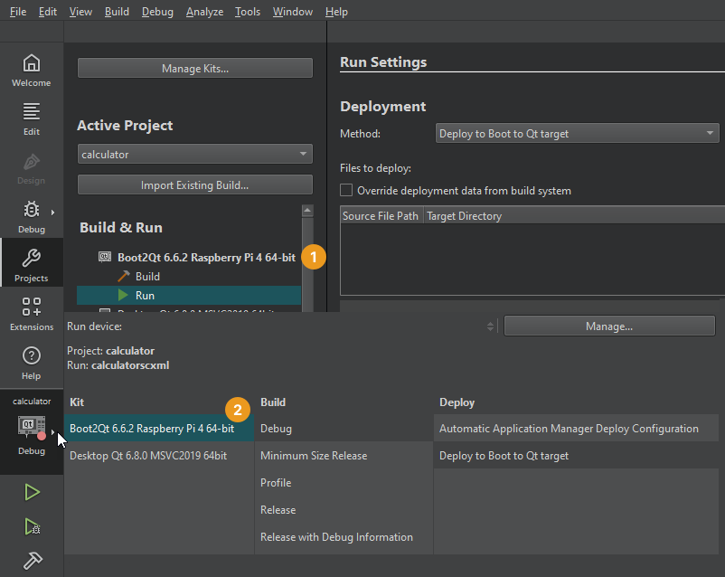

Preview Qt Quick UIs on devices
To preview a UI on an Android device, turn on USB debugging on the device and connect it to the computer with a USB cable.
To preview a UI on a Boot to Qt device, connect the device to the computer with a USB cable, or a wired or wireless connection, depending on the device, and configure a connection to it. The necessary kits have been predefined, but you need to select the one appropriate for your current project.
Deploy configurations handle the packaging and copying of the necessary files to a location in a device where you want to run the executable at.
Note: To preview on a wirelessly connected device, go to Preferences > Devices and connect the device.
To preview a UI on a device:
- Go to Projects > Build & Run.
- Activate the kit predefined for the device type (1).
- Select the kit for the device in the kit selector (2).

- Go to Build, and select QML Preview or Alt+P.
On Android
Use the USB debugging feature on an Android device to create a connection to the device from Qt Creator and run the preview utility on it.
Debugging is turned on in different ways on different Android devices. Look for USB Debugging under Developer Options. Tap Build number in Settings > About several times to show Developer Options.
After you turn on debugging, connect the Android device to the system with a USB cable.
The first time you preview a UI on a device, the preview utility is copied to it, which might take some time. Thereafter, previewing gets faster because only the UI files need to be copied to the device.
On Boot to Qt
Preview a UI on a supported Boot to Qt device that you configure as instructed in the Boot to Qt documentation.
See also Boot to Qt: Documentation, Support Levels for Target Hardware, How To: Design UIs, and UI Design.